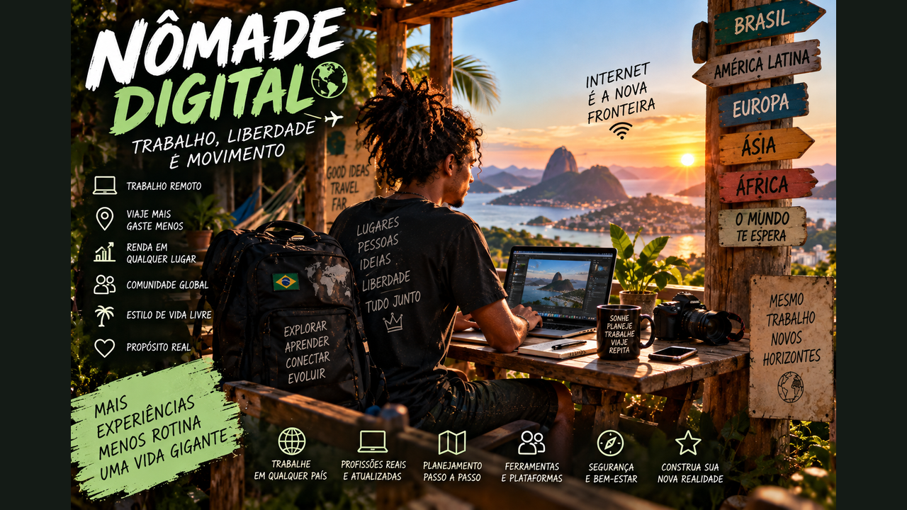

Trabalho, Liberdade e Movimento — construa renda portátil, planeje destinos, entenda vistos e transforme mobilidade em uma vida sustentável.
6 módulos24 aulasProjeto Nômade de 90 dias
0 de 24 aulas concluídas
O mundo pode ser maior que o caminho casa–trabalho
Depois de descobrir que parte do trabalho pode acontecer pela internet, surge outra pergunta: e se você pudesse escolher onde viver enquanto trabalha? Este curso transforma essa possibilidade em planejamento real — renda, custos, documentos, segurança, saúde, cultura e uma experiência-piloto de 90 dias.

01
Nômade digital sem fantasia
Entenda o que realmente significa construir uma vida em movimento sustentada por trabalho remoto.
Aula 01
O mundo pode virar seu mapa de vida
Ser nômade digital não é estar permanentemente de férias. É conseguir transportar uma parte importante da vida profissional entre lugares, mantendo renda, entregas, saúde e responsabilidades. A tecnologia tornou possível separar, em várias profissões, o lugar onde o trabalho é feito do lugar onde a empresa está.
Isso cria uma novidade histórica para muitos jovens: primeiro você pode construir uma profissão digital e depois pensar em onde deseja viver por períodos. A ordem importa. Viajar sem renda sustentável transforma liberdade em pressão; renda remota bem organizada transforma mobilidade em escolha.
Atividade prática
Escreva quais partes da sua vida já poderiam funcionar a distância e quais ainda dependem de presença física.
Aula 02
Nômade, viajante e trabalhador remoto
Um trabalhador remoto pode trabalhar sempre da mesma casa. Um viajante pode viajar sem trabalhar. O nômade digital combina deslocamento com atividade profissional remota, mas há inúmeras versões: mudar de cidade a cada mês, passar temporadas longas, circular apenas pelo Brasil ou alternar uma base fixa com viagens.
Não existe obrigação de cruzar oceanos. Começar dentro do próprio estado ou país pode ensinar logística, orçamento e rotina com menos risco.
Atividade prática
Desenhe três modelos de vida móvel: regional, Brasil e internacional.
Aula 03
Liberdade exige estrutura
Internet estável, ambiente adequado, reserva financeira, documentos, saúde, segurança e rotina formam a infraestrutura invisível da vida nômade. A foto bonita mostra o notebook diante do mar; o trabalho real exige chamadas, prazos e concentração.
A meta não é fugir da rotina, mas construir uma rotina portátil que deixe espaço para conhecer lugares.
Atividade prática
Liste dez condições mínimas para você conseguir trabalhar bem durante uma viagem.
Aula 04
Comece pequeno
Uma experiência de sete a trinta dias em outra cidade pode funcionar como laboratório. Você testa equipamentos, custos, produtividade e convivência antes de assumir uma mudança longa.
Use o teste para descobrir seus limites. Talvez você precise de mais silêncio, internet melhor ou estadias mais longas. O estilo de vida deve se adaptar a você.
Atividade prática
Planeje uma experiência-piloto de 14 dias sem comprar nada ainda.
Ferramenta do módulo — atualize seu Caderno Nômade com decisões, orçamento, documentos e aprendizados.
02
Renda que viaja com você
Construa uma base profissional capaz de continuar funcionando quando sua localização muda.
Aula 05
Emprego remoto, contrato e freelance
As principais fontes de renda portátil são emprego remoto, prestação de serviços, freelance e negócios digitais. Cada modelo tem riscos, benefícios e responsabilidades diferentes. Uma vaga remota também pode limitar o país de residência ou o fuso permitido.
Antes de planejar destinos, descubra exatamente o que seu contrato permite. Trabalhar remotamente não significa automaticamente poder trabalhar legalmente de qualquer país.
Atividade prática
Classifique sua renda desejada entre emprego, contractor, freelance e negócio próprio.
Aula 06
Renda mínima de segurança
Some custo mensal de vida, deslocamentos, seguro, ferramentas, impostos, taxas e reserva. Depois compare com sua renda líquida, não com faturamento bruto. Uma margem protege contra clientes atrasados, câmbio e emergências.
O estilo nômade pode ser barato ou caro. Mover-se com frequência tende a aumentar transporte e hospedagem; permanecer mais tempo pode reduzir custos.
Atividade prática
Monte três cenários mensais: essencial, confortável e emergência.
Aula 07
Diversifique sem se dispersar
Depender de um único cliente pode ser frágil para freelancers, mas aceitar muitos projetos também destrói qualidade de vida. Diversificação saudável significa reduzir pontos únicos de falha sem criar caos.
Construa primeiro uma fonte principal previsível e depois uma segunda fonte complementar ou reserva financeira.
Atividade prática
Desenhe sua arquitetura de renda com fonte principal, complementar e reserva.
Aula 08
Trabalho internacional
Clientes e empresas podem estar em outros países enquanto você permanece no Brasil ou viaja. Isso amplia mercado e também adiciona câmbio, idioma, contratos, fusos e regras fiscais.
Nunca escolha um país apenas porque alguém disse que é 'bom para nômades'. Verifique regras oficiais para sua nacionalidade e situação profissional antes de trabalhar de lá.
Atividade prática
Escolha dois mercados internacionais e liste idioma, fuso e competências exigidas.
Ferramenta do módulo — atualize seu Caderno Nômade com decisões, orçamento, documentos e aprendizados.
03
Planejamento financeiro e logístico
Aprenda a calcular o custo real da mobilidade e evitar que imprevistos destruam a viagem.
Aula 09
Orçamento por destino
Compare hospedagem, alimentação, transporte local, internet, seguro, lazer e deslocamento até o próximo destino. Valores de redes sociais envelhecem rápido; pesquise preços próximos da data real.
Crie uma margem para variação cambial e alta temporada. Um destino barato no papel pode ficar caro se você precisar de coworking diário ou transporte constante.
Atividade prática
Monte uma planilha para dois destinos usando as mesmas categorias.
Aula 10
Reserva de emergência nômade
Sua reserva precisa considerar não só despesas comuns, mas retorno inesperado, equipamento quebrado, saúde e perda temporária de renda. Mantenha acesso a mais de uma forma de pagamento quando possível.
Reserva não é orçamento de passeio. Separar os dois protege sua capacidade de voltar para uma base segura.
Atividade prática
Defina um valor-alvo de reserva e quais situações autorizariam seu uso.
Aula 11
Hospedagem para trabalhar
Preço e beleza não bastam. Verifique mesa, cadeira, ruído, internet, segurança, localização e regras do local. Para estadias longas, pergunte sobre velocidade real da conexão e tenha alternativa de internet.
Coworkings e colivings podem oferecer estrutura e comunidade, mas entram no orçamento.
Atividade prática
Crie um checklist de 12 itens antes de reservar hospedagem.
Aula 12
Mochila tecnológica
Notebook, carregador, adaptadores, fones, armazenamento, autenticação e backup são parte da sua ferramenta de trabalho. Quanto mais essencial for um item, mais importante é ter plano B.
Evite carregar equipamentos desnecessários. Mobilidade melhora quando cada objeto possui função clara.
Atividade prática
Monte sua lista essencial e marque o que precisa de redundância.
Ferramenta do módulo — atualize seu Caderno Nômade com decisões, orçamento, documentos e aprendizados.
04
Documentos, vistos e fronteiras
Aprenda a separar turismo, residência e autorização para trabalhar remotamente.
Aula 13
Turista não é automaticamente nômade legal
Entrar legalmente como turista não significa automaticamente que toda atividade profissional seja permitida. Cada país define suas próprias regras. Alguns criaram vistos ou autorizações específicos para trabalhadores remotos.
A regra deve ser conferida em fonte governamental antes da viagem. Blogs e vídeos ajudam a descobrir possibilidades, mas não substituem informação oficial.
Atividade prática
Crie uma ficha por país: entrada, duração, trabalho remoto, renda mínima, seguro e fonte oficial.
Aula 14
Vistos para nômades digitais
Programas específicos costumam exigir comprovação de trabalho ou renda estrangeira, seguro e documentação. Requisitos mudam. O Brasil, por exemplo, possui regulamentação própria para estrangeiros que trabalham remotamente para empregador no exterior; a Colômbia também possui categoria oficial de nômade digital.
Isso demonstra como o trabalho remoto já chegou às políticas migratórias. Para brasileiros indo ao exterior, porém, é necessário consultar a regra do país de destino.
Atividade prática
Pesquise um país usando apenas site oficial de governo e registre a data da consulta.
Aula 15
Passaporte, seguro e documentos
Verifique validade do passaporte, requisitos de entrada, seguro, comprovantes e regras de permanência. Mantenha cópias seguras e acessíveis dos documentos essenciais.
Seguro não elimina risco, mas reduz exposição financeira em situações cobertas. Leia condições, exclusões e procedimentos antes de contratar.
Atividade prática
Monte uma pasta digital com checklist de documentos, sem colocar senhas em arquivos inseguros.
Aula 16
Impostos e residência fiscal
Mobilidade não apaga obrigações tributárias. Residência fiscal, fonte de renda, tempo de permanência e acordos entre países podem alterar responsabilidades.
Não tente resolver situações complexas por vídeos curtos. Ao mudar residência ou trabalhar internacionalmente de forma contínua, procure orientação tributária adequada.
Atividade prática
Escreva as perguntas que você faria a um contador antes de passar longos períodos fora.
Ferramenta do módulo — atualize seu Caderno Nômade com decisões, orçamento, documentos e aprendizados.
05
Saúde, segurança e comunidade
Construa uma vida móvel que continue humana e sustentável.
Aula 17
Saúde não entra de férias
Sono, alimentação, movimento, medicamentos e acompanhamento precisam sobreviver às mudanças de lugar. Viagens longas podem desmontar hábitos básicos.
Planeje dias comuns, não apenas dias turísticos. Uma vida nômade sustentável precisa funcionar numa terça-feira normal.
Atividade prática
Crie sua rotina mínima de sono, alimentação, exercício e descanso.
Aula 18
Segurança digital
Wi-Fi público, perda de aparelho e golpes podem expor trabalho e dados. Use atualizações, bloqueio de tela, autenticação em dois fatores e backups. Evite compartilhar informações sensíveis em redes desconhecidas sem proteção adequada.
Segurança digital é especialmente importante quando seu computador também é sua fonte de renda.
Atividade prática
Ative 2FA nas contas essenciais e revise seu sistema de backup.
Aula 19
Segurança no território
Pesquise bairros, transporte, costumes, clima e alertas oficiais. Evite exibir equipamentos caros desnecessariamente e mantenha alguém informado sobre deslocamentos importantes.
Conhecer um lugar exige respeito e atenção. A liberdade de viajar não elimina riscos locais.
Atividade prática
Crie um protocolo pessoal para chegada em uma cidade desconhecida.
Aula 20
Solidão e comunidade
Movimento constante pode dificultar vínculos. Coworkings, atividades locais, cursos e comunidades podem criar conexões, mas amizade leva tempo.
Viajar mais devagar costuma permitir relações mais profundas e também reduz desgaste logístico.
Atividade prática
Planeje duas formas de conhecer pessoas sem depender apenas de aplicativos.
Ferramenta do módulo — atualize seu Caderno Nômade com decisões, orçamento, documentos e aprendizados.
06
Desenhe uma vida, não uma fuga
Transforme mobilidade em ferramenta de aprendizado, cultura e qualidade de vida.
Aula 21
Slow travel
Trocar de cidade toda semana parece intenso, mas pode consumir tempo, dinheiro e energia. Ficar mais tempo permite trabalhar melhor, conhecer mercados locais e compreender o lugar além dos pontos turísticos.
Mobilidade não precisa significar velocidade. Muitas vezes, liberdade é poder permanecer.
Atividade prática
Compare um roteiro de quatro cidades em um mês com uma cidade durante um mês.
Aula 22
Respeito ao lugar
Você não viaja por cenários vazios: chega a comunidades com história, moradia, trabalho e cultura. Consumo local responsável, respeito às regras e curiosidade sem invasão melhoram a relação com o território.
Evite tratar moradores como figurantes de conteúdo. Pergunte antes de fotografar pessoas e espaços privados.
Atividade prática
Escreva cinco princípios do viajante que você deseja ser.
Aula 23
Aprender em movimento
Museus, feiras, bibliotecas, trilhas, conversas e práticas locais podem transformar a viagem numa educação viva. Escolha um tema para investigar em cada destino.
Registre o que aprendeu em diário, áudio, fotografia ou desenho. A viagem passa a produzir repertório, não apenas lembranças.
Atividade prática
Escolha um tema de investigação para sua primeira viagem.
Aula 24
Quando parar também é liberdade
Você pode descobrir que prefere uma base fixa, viagens curtas ou temporadas. Isso não é fracasso. O objetivo da mobilidade é aumentar escolhas, não criar uma nova obrigação de estar sempre em movimento.
Reavalie periodicamente dinheiro, saúde, relações, trabalho e sentido.
Atividade prática
Defina cinco sinais que indicariam que é hora de permanecer mais tempo em um lugar.
Ferramenta do módulo — atualize seu Caderno Nômade com decisões, orçamento, documentos e aprendizados.
🧭 Central de Documentação
Regras migratórias mudam. Use fontes governamentais e confirme novamente antes de comprar passagem ou trabalhar de outro país.